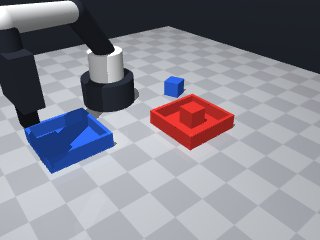

0 demonstrations · reward: gt · perception: vision · 8 practice episodes in 1 rounds
Safety layer: 0 halts, 14 clamps. OpenCV perception: 100% of object sightings, median error 4.11 mm.
| role | model | calls | tokens in | tokens out | USD |
|---|---|---|---|---|---|
| coder | nvidia/nemotron-3-super-120b-a12b | 1 | 1,818 | 1,609 | $0.0020 |
| summarizer | nvidia/Nemotron-3_5-Lightning | 0 | 0 | 0 | $0.0000 |
| compute | local | 194 s | $0.0000 | ||
| total | 1 | 1,818 | 1,609 | $0.0020 |
- Start with a home pose to ensure a known starting point. - For each colour (red, blue) locate the matching cube and tray using their names; if perception fails (LookupError), move the gripper away briefly and re‑try a few times. - Approach the cube from above, descend to a grasp pose (tool point ≈ cube centre), close the gripper, and verify that something is held. - Transport the cube to the centre of the matching tray, lower to a safe drop height (just above the tray floor), release, and verify the gripper is empty. - Use modest speeds for precise motions near objects and default speed for travel moves. - All poses are read at runtime; no hard‑coded coordinates.
--- round_0/skill.py +++ round_1/skill.py @@ -0,0 +1,81 @@ +import math + +def run(robot): + """Pick up each coloured cube and place it into the tray of the same colour.""" + # Safety: start from a known pose + robot.home() + + colours = ["red", "blue"] + max_attempts = 3 # perception retries + + for colour in colours: + cube_name = f"{colour}_cube" + tray_name = f"{colour}_tray" + + # --- perceive cube ------------------------------------------------- + cube_pose = None + for _ in range(max_attempts): + try: + cube_pose = robot.get_pose(cube_name) + break + except LookupError: + # cube not visible – move gripper out of the way and try again + robot.move_to(0.2, 0.0, 0.2, speed=0.2) # a neutral spot + robot.wait(0.2) + if cube_pose is None: + robot.log(f"[{colour}] Could not locate cube after {max_attempts} attempts") + return False + + # --- perceive tray ------------------------------------------------- + try: + tray_pose = robot.get_pose(tray_name) + except LookupError: + robot.log(f"[{colour}] Tray not visible") + return False + + # --- grasp cube ---------------------------------------------------- + # Approach from above + above = [cube_pose["pos"][0], cube_pose["pos"][1], cube_pose["pos"][2] + 0.05] + robot.move_to(*above, speed=0.2) + # Descend to grasp height (tool point ≈ cube centre) + grasp_pos = [cube_pose["pos"][0], cube_pose["pos"][1], cube_pose["pos"][2]] + robot.move_to(*grasp_pos, yaw=cube_pose["yaw"], speed=0.08) + + # Close fingers + if not robot.grasp(): + robot.log(f"[{colour}] Grasp failed") + # retreat and try again once + robot.move_by(dz=0.05, speed=0.1) + if not robot.grasp(): + robot.log(f"[{colour}] Second grasp attempt failed") + return False + + # Verify hold + if robot.holding() != cube_name: + robot.log(f"[{colour}] Not holding expected object") + return False + + # --- transport to tray --------------------------------------------- + # Lift up + robot.move_by(dz=0.08, speed=0.1) + # Move above tray centre + above_tray = [tray_pose["pos"][0], tray_pose["pos"][1], tray_pose["pos"][2] + 0.08] + robot.move_to(*above_tray, speed=0.2) + # Lower to drop height (just above tray bottom) + drop_z = tray_pose["pos"][2] + 0.02 # 2 cm above table, inside tray walls + drop_pos = [tray_pose["pos"][0], tray_pose["pos"][1], drop_z] + robot.move_to(*drop_pos, yaw=tray_pose["yaw"], speed=0.08) + + # Release + robot.release() + robot.wait(0.1) + if robot.holding() is not None: + robot.log(f"[{colour}] Failed to release") + return False + + # Retreat + robot.move_by(dz=0.08, speed=0.1) + + # All cubes placed + robot.home() + return True

import math
def run(robot):
"""Pick up each coloured cube and place it into the tray of the same colour."""
# Safety: start from a known pose
robot.home()
colours = ["red", "blue"]
max_attempts = 3 # perception retries
for colour in colours:
cube_name = f"{colour}_cube"
tray_name = f"{colour}_tray"
# --- perceive cube -------------------------------------------------
cube_pose = None
for _ in range(max_attempts):
try:
cube_pose = robot.get_pose(cube_name)
break
except LookupError:
# cube not visible – move gripper out of the way and try again
robot.move_to(0.2, 0.0, 0.2, speed=0.2) # a neutral spot
robot.wait(0.2)
if cube_pose is None:
robot.log(f"[{colour}] Could not locate cube after {max_attempts} attempts")
return False
# --- perceive tray -------------------------------------------------
try:
tray_pose = robot.get_pose(tray_name)
except LookupError:
robot.log(f"[{colour}] Tray not visible")
return False
# --- grasp cube ----------------------------------------------------
# Approach from above
above = [cube_pose["pos"][0], cube_pose["pos"][1], cube_pose["pos"][2] + 0.05]
robot.move_to(*above, speed=0.2)
# Descend to grasp height (tool point ≈ cube centre)
grasp_pos = [cube_pose["pos"][0], cube_pose["pos"][1], cube_pose["pos"][2]]
robot.move_to(*grasp_pos, yaw=cube_pose["yaw"], speed=0.08)
# Close fingers
if not robot.grasp():
robot.log(f"[{colour}] Grasp failed")
# retreat and try again once
robot.move_by(dz=0.05, speed=0.1)
if not robot.grasp():
robot.log(f"[{colour}] Second grasp attempt failed")
return False
# Verify hold
if robot.holding() != cube_name:
robot.log(f"[{colour}] Not holding expected object")
return False
# --- transport to tray ---------------------------------------------
# Lift up
robot.move_by(dz=0.08, speed=0.1)
# Move above tray centre
above_tray = [tray_pose["pos"][0], tray_pose["pos"][1], tray_pose["pos"][2] + 0.08]
robot.move_to(*above_tray, speed=0.2)
# Lower to drop height (just above tray bottom)
drop_z = tray_pose["pos"][2] + 0.02 # 2 cm above table, inside tray walls
drop_pos = [tray_pose["pos"][0], tray_pose["pos"][1], drop_z]
robot.move_to(*drop_pos, yaw=tray_pose["yaw"], speed=0.08)
# Release
robot.release()
robot.wait(0.1)
if robot.holding() is not None:
robot.log(f"[{colour}] Failed to release")
return False
# Retreat
robot.move_by(dz=0.08, speed=0.1)
# All cubes placed
robot.home()
return True